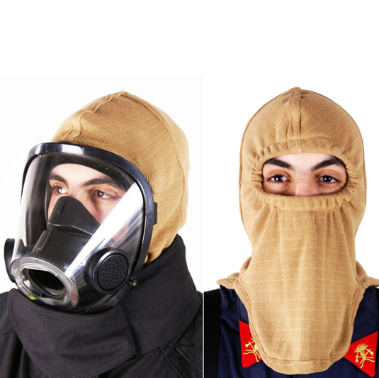
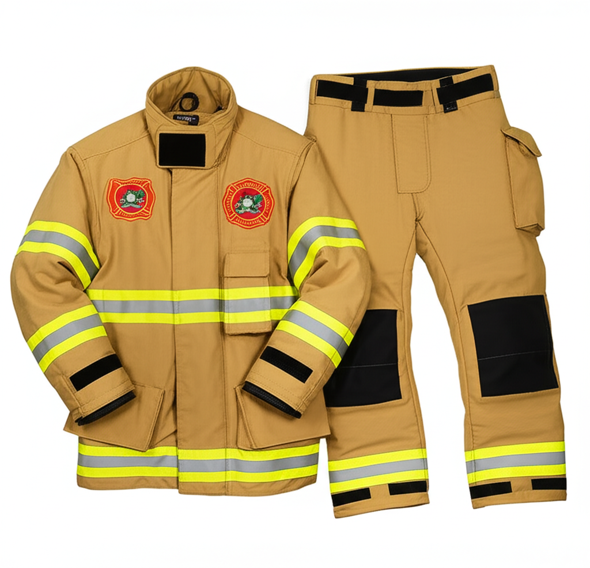
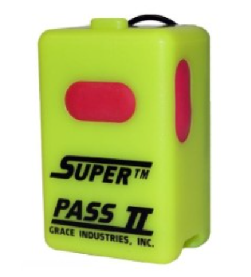
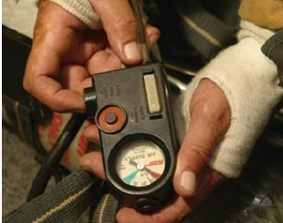
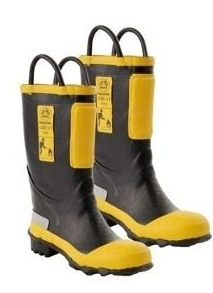
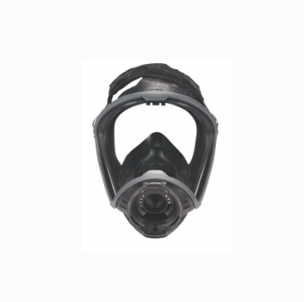
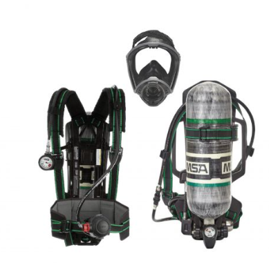

Riesgos y Causas de Accidentes Bomberiles
La profesión de bombero posee múltiples riesgos. Peligros potenciales incluyen:
- Colapsos estructurales (traumatismos, atrapamientos).
- Elementos punzantes o cortantes.
- Altas temperaturas (stress térmico).
- Atmósferas peligrosas (asfixia, intoxicaciones agudas/crónicas, cáncer).
- Ataques cardiovasculares (sobreesfuerzos).
- Materiales peligrosos (vía respiratoria o dérmica).
- Elementos energizados (electrocuciones).
- Explosiones y Radiaciones.
- Quemaduras (térmicas, eléctricas, químicas).
- Caídas (alturas, profundidades).
- Contaminación biológica (agentes patógenos, fluidos corporales).
- Accidentes vehiculares.
Definiciones Clave:

- Accidente: Acto no deseado que interrumpe tareas causando lesiones y/o daños.
- Incidente (Casi-Accidente): Evento inesperado con potencial de daño, pero sin generación de lesiones/daños.
- Peligro: Fuente, situación o acto con potencial para causar daño.
- Riesgo: Probabilidad de suceso peligroso x Gravedad del daño.
- Enfermedad Profesional: Contraída por exposición a factores de riesgo laborales (desarrollo paulatino). Ej: hipoacusia, cáncer.
Causas de los Accidentes: Conocerlas permite tomar medidas de control.

- Causas Básicas (Origen): Factores Personales (del hombre) y Factores Técnicos o del Trabajo (ambiente, equipo, métodos).
- Causas Inmediatas: Acciones y/o condiciones subestándares (visibles). Se producen al no controlar causas básicas. Pueden ser Condiciones Inseguras o Actos Inseguros. Es crucial identificar la causa raíz (básica).
Lesiones y Enfermedades Profesionales
- Lesiones Típicas: Traumatismos, esguinces, heridas, asfixia, intoxicación, ahogamiento, quemaduras, electrocución. (Muchas evitables con EPP).
- Causas Principales de Lesiones: Calor excesivo, golpes, accidentes vehiculares, descargas eléctricas, caídas, atrapamientos, atmósferas tóxicas.
- Enfermedades Profesionales Principales: Accidentes cardiovasculares, stress psicológico, afecciones músculo-esqueléticas, exposición a tóxicos (respiratorias, dermatológicas, cáncer), riesgos biológicos, golpes de calor.
- Factores de Riesgo para la Salud: Enf. coronarias, hipertensión, fumar, diabetes, antecedentes cardíacos.
- Prevención de la Salud: Exámenes médicos (ingreso, periódicos), dieta balanceada, ejercicio físico, tratamiento higiénico de heridas, protección biológica, inmunizaciones, no fumar.
Elementos de Protección Personal (EPP)
El EPP no evita accidentes, pero reduce y protege de sus consecuencias. Específico según intervención.
EPP para Incendios Estructurales:

- Casco: Protege cabeza, cara, cuello posterior de impactos, calor, frío. Partes: cubierta externa (termoplástico), sistema absorción energía, sistema suspensión, ajuste/retención, visera, cubre orejas/cuello. 
- Monjita (Capucha): Protege orejas, cuello, cara de calor extremo. Material ignífugo. Usar con máscara de ERA. 
- Chaquetón y Pantalón: Tres capas:
- Capa Exterior: (Nomex, Kevlar, PBI, etc.) Protege de abrasión, rasgaduras, quemaduras por contacto.
- Barrera de Humedad/Vapor: Intermedia. Protege de agua hirviendo, vapor; limita humedad en barrera térmica. (ej. Gore-Tex).
- Barrera Térmica/Calor: Interna. Limita paso de calor al cuerpo.

- Limpieza EPP Estructural (NFPA 1851:2020):
- Descontaminación Primaria (REP): En escena (seco/húmedo). Embolsar, etiquetar, transportar fuera de cabina.
- Desinfección: Según fabricante. Luego limpieza avanzada.
- Limpieza Avanzada: Máquinas industriales, agua <40°C, jabón pH 6.5-10.5, evitar fregado, no lavandina/clorados/abrasivos/hidrolavadoras. Enjuague adecuado. No lavar en hogar. Separar capas. Inspeccionar post-lavado.
- Guantes: Lavar con agua jabonosa, enjuagar. Inspeccionar. Desechar si dañados o con químicos no removibles.  
- PASS (Sistema de Seguridad de Alerta Personal): Alarma sonora si bombero inmóvil por tiempo determinado (NFPA 1982). Puede ser manual o integrado al ERA. 
- Botas: Resisten agua, golpes, cortes, resbalones, perforaciones, patógenos. Resistencia dieléctrica puede afectarse si dañadas. Limpiar, inspeccionar, desechar si no reparables, almacenar paradas y sin sol, ventilar. 
- Protección Ocular: Visor de máscara ERA es adecuada. Si no se usa ERA, emplear antiparras y protector facial (NFPA 1500). Peligros: polvo, partículas, escombros, humo, químicos, luz soldadura, temp. elevadas, patógenos.


Equipos de Protección Respiratoria (ERA)
Pulmones y vías respiratorias son muy vulnerables. Regla fundamental: no entrar a atmósferas con humo/gases sin ERA.
Situaciones de Uso: Deficiencia de Oxígeno, Temperaturas elevadas, Humo, Gases tóxicos.
Clasificación: Equipos Purificadores de Aire (EPA), Equipos de Respiración Semiautónoma (ERS), Equipos de Respiración Autónoma (ERA).
Tipos de ERA: Circuito Abierto (más usado por bomberos, exhala a la atmósfera) y Circuito Cerrado.
ERA de Circuito Abierto - Partes Principales:
- Máscara (Facial): Correas/araña de ajuste, cubre boca-nariz (evita empañamiento, reduce aire muerto), diafragma comunicación, válvula exhalación (presión positiva).
- Arnés: Transporta cilindro invertido. Diseño ergonómico. Conector aire, reductor presión, mangueras.
- Manómetro: En hombro, marca presión tubo (fotosensible).
- Válvula de Demanda: Suministra aire según necesidad, mantiene presión positiva en máscara. Activada al inhalar.
- Válvula de Presión Positiva (By-pass): Flujo adicional/constante si se presiona/gira (desempañar, compartir aire, falla demanda, ruptura visor).
- Correaje: Fijación al bombero (hombros, cintura), fijación cilindro.
- Regulador de Presión: Reduce presión del cilindro. Válvula de alivio para exceso.
- Cilindro de Aire Comprimido: Comunes 8.5 lts, cargados a 2216 psi (aprox. 1278 lts aire). Duración depende de respiración y actividad (ref: 32 min a 40 lpm). Tipos: fibra de vidrio, Kevlar, aluminio, acero.

Inspección y Ensamble Previo (Norma): Correas estiradas, presión manómetro (>2000psi), válvula demanda activada, válvula presión positiva desactivada, abrir cilindro (cerrar media vuelta), verificar manómetros (regulador y cilindro iguales), escuchar alarma audible, colocarse equipo.
Mantenimiento ERA: Testeo por personal especializado (presión, hermeticidad, válvulas, regulador, transductor, hidrostático, flujo). Certificación ISO 9001-2015.
Normas Internacionales ERA: NFPA 1981 (ERA Circuito Abierto), NFPA 1404 (Programa Sistemas Respiración).
Resumen basado en "CLASE 10 SEGURIDAD DEL BOMBERO.pdf".